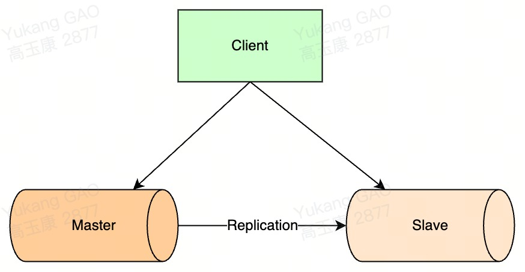
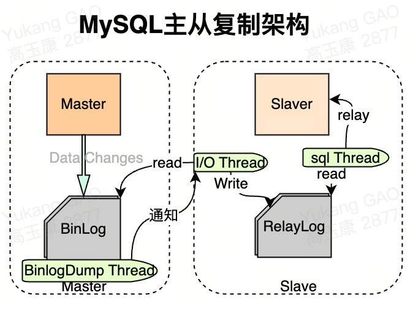
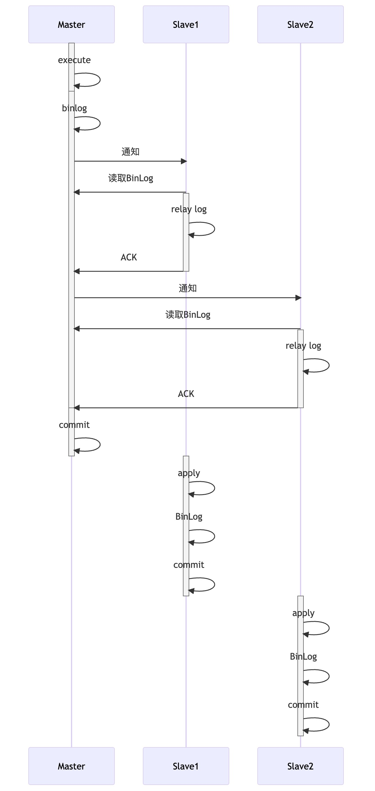
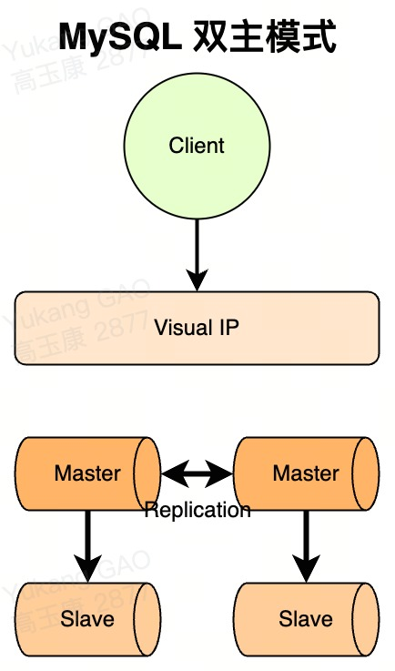
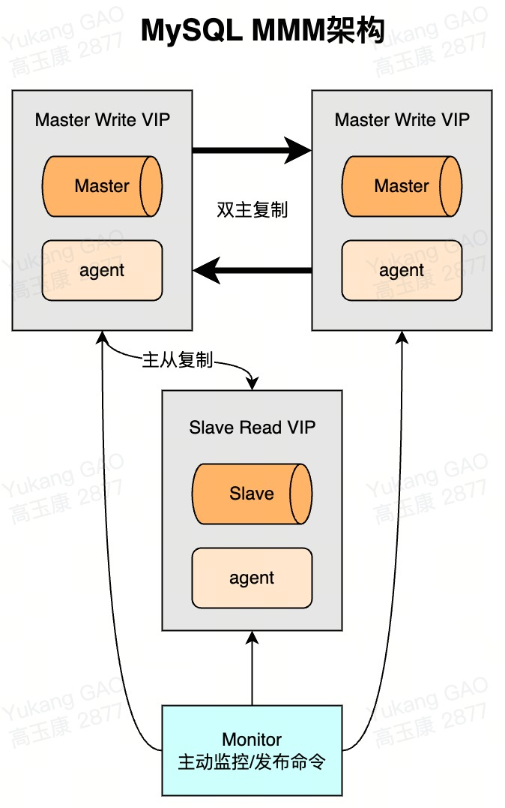
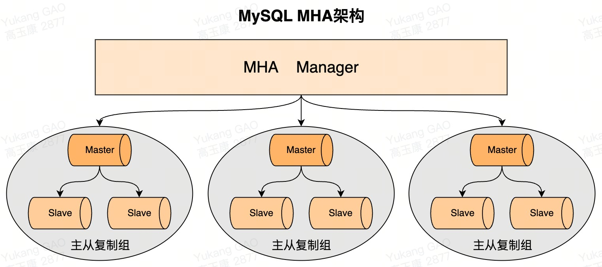

MySQL5.6安装
5811. 查看是否已经安装2 rpm -qa|grep mysql3 yum repolist all | grep mysql4
52. 卸载MySQL6 #卸载mysql7 yum remove -y mysql mysql-libs mysql-common 8 #删除mysql下的数据文件9 rm -rf /var/lib/mysql 10 #删除mysql配置文件11 rm /etc/my.cnf 12 #删除组件13 yum remove -y mysql-community-release-el6-5.noarch 14 #查找所有的mysql的安装包15 rpm -qa|grep mysql 16 rpm -e --nodeps <安装的包名>卸载17
183. 安装MySQL5.619 #下载rpm文件20 wget http://repo.mysql.com/mysql-community-release-el6-5.noarch.rpm21 #执行rpm源文件22 rpm -ivh mysql-community-release-el6-5.noarch.rpm23 #执行安装文件24 yum install mysql-community-server25
264. 启动MySQL27 systemctl start mysqld28
295. 设置root密码30 #例如：为 root 账号设置密码为 root ：31 /usr/bin/mysqladmin -u root password 'root' 32 #没有密码 有原来的密码则加33 /usr/bin/mysqladmin -u root -p '123' password 'root'34
356. 登录MySQL36 mysql -uroot -proot37 #-u：指定数据库用户名38 #-p：指定数据库密码，记住-u和登录密码之间没有空格39
407. 配置MySQL41 vim /etc/my.cnf42 [mysqld]43 # MySQL设置大小写不敏感：默认：区分表名的大小写，不区分列名的大小写44 # 0：大小写敏感 1：大小写不敏感45 lower_case_table_names=146 # 默认字符集47 character-set-server=utf848
498. MySQL远程连接授权50 #授权命令51 grant 权限 on 数据库对象 to 用户52 grant replication slave on *.* to 'root'@'%' identified by '123456';53 #在进行授权的时候，如果提示密码的问题，把密码验证取消54 set global validate_password_policy=0;55 set global validate_password_length=1;56
579. MySQL刷新权限58 FLUSH PRIVILEGES;MySQL5.7安装(rmp安装)
2811. 卸载MySQL2 rpm -qa | grep mariabd3 rpm -e mariadb… --nodeps4 rpm -qa | grep mariabd5
62. 安装7 #安装公共包8 rpm -ivh mysql-community-common-5.7.28-1.el7.x86_64.rpm9 rpm -ivh mysql-community-libs-5.7.28-1.el7.x86_64.rpm10 rpm -ivh mysql-community-libs-compat-5.7.28-1.el7.x86_64.rpm11 #安装服务端和客户端12 rpm -ivh mysql-community-client-5.7.28-1.el7.x86_64.rpm13 rpm -ivh mysql-community-server-5.7.28-1.el7.x86_64.rpm14 #安装工具包15 rpm -ivh mysql-community-devel-5.7.28-1.el7.x86_64.rpm16
17 #初始化mysql 并创建一个user的用户18 mysqld --initialize --user=mysql19
203. 登录设置密码21 #启动mysql22 systemctl start mysqld23 #查看默认密码24 cat /var/log/mysqld.log | grep password 25 #登录26 mysql -uroot -p27 #修改密码28 set password=password('root');
881修改方式: 2 -> 配置/etc/my.cnf, 3 -> 重启 systemctl restart mysqld.4 -> 授权5 --> grant replication slave on *.* to 'root'@'%' identified by 'root';6 --> grant all privileges on *.* to 'root'@'%' identified by 'root';7 -> 刷新 flush privileges;8
9
101. master配置11 log_bin=mysql-bin12 server-id=113 sync-binlog=114 #忽略的db15 binlog-ignore-db=performance_schema16 binlog-ignore-db=information_schema17 binlog-ignore-db=sys18 #设置同步的db默认为全部19 #binlog-do-db=demo20 #查看master状态 存在Fille和Position就代表配置成功21 show master status;22
232. slave配置24 server-id=225 relay_log=mysql-relay-bin26 read_only=127 log-slave-updates=128 #查看slave状态29 show slave status;30 #开启从库31 start slave;32
333. master半同步设置34 #查看是否支持动态加载插件35 show variables like '%have_dynamic_loading%';36 #查看已安装的插件 发现没有半同步的插件安装插件37 show plugins;38 #安装插件39 install plugin rpl_semi_sync_master soname 'semisync_master.so';40 #查看变量41 show variables like '%semi%';42 #开启半同步状态43 set global rpl_semi_sync_master_enabled = 1;44 #设置超时时间45 set global rpl_semi_sync_master_timeout=1000;46
474. salve半同步设置48 #查看是否安装semi插件没有安装的话需要进行安装49 install plugin rpl_semi_sync_slave soname 'semisync_slave.so';50 #查看参数值51 show variables like '%semi%';52 #设置参数值53 set global rpl_semi_sync_slave_enabled=1;54 #重启slave55 stop slave;56 start slave;57
585. 观察日志是否开启半同步成功59 cat /var/log/mysqld.log60 -> 出现下边日志代表开启成功61 -> Semi-sync replication initialized for transactions.62 -> Semi-sync replication enable on the master.63 646. master并行复制设置65 #查看并行复制参数66 show variables like '%binlog_group%';67 #设置group数量为100068 set global binlog_group_commit_sync_delay=1000;69 #设置非延迟count为10070 set global binlog_group_commit_sync_no_delay_count=100; 71 727. salve并行设置73 #查看slave配置74 show variables like '%slave%';75 #直接修改my.cnf文件，其实跟set global参数是等价的。76 #设置同步类型为并行复制77 slave-parallel-type=LOGICAL_CLOCK78 #设置sql执行线程数为16 常规设置4-879 slave-parallel-workers=1680 #设置最大的任务数量81 slave_pending_jobs_size_max=214748364882 #设置提交的顺序严格按照事务id执行83 #slave_preserve_commit_order=1 todo待确认84 #接收master的数据存储在table中85 master_info_repository=TABLE86 #relay为TABLE87 relay_log_info_repository=TABLE88 relay_log_recovery=1111架构设计理念: 遵从三个维度, 可用性;扩展性;一致性.2 -> 可用性: 站点高可用;服务高可用;数据高可用. 保证高可用最好的方法数据冗余, 主从模式;双柱模式; 3 --> 主从默认: 简单灵活, 能满足多种需求. 比较主流的用法, 但是写操作高可用需要自行处理.4 --> 双主默认: 互为主从, 有双主双写;双主单写两种方式, 建议使用双主单写.5 -> 扩展性: 从库;分库分表.6 --> 从库: 简单易操作, 方案成熟. (从库过多会引发主库性能损耗. 建议不要作为长期的扩充方案, 应该设法用良好的设计避免持续加从库来缓解读性能问题.)7 --> 分库分表: 可以分为垂直拆分和水平拆分, 垂直拆分可以缓解部分压力, 水平拆分理论上可以无限扩展.8 -> 一致性: 一致性主要考虑集群中各数据库数据同步以及同步延迟问题. 9 --> 不使用从库: 扩展读性能问题需要单独考虑, 否则容易出现系统瓶颈.10 --> 增加访问路由层: 可以先得到主从同步最长时间, 在数据发生修改后的时间内, 先访问主库.11

751主从模式:2 -> 应用场景: 3 --> 实时灾备, 用于故障切换(高可用).4 --> 读写分离, 提供查询服务(读扩展).5 --> 数据备份, 避免影响业务(高可用).6
7主从复制步骤:8 -> Master服务器对数据库更改操作记录在BinLog中, Master服务器中的BinlogDump Thread接到写入请求后, 读取Binlog信息推送给Slave的I/O Thread.9 -> Slave的I/O Thread将读取到的Binlog信息写入到本地Relay Log中.10 -> Slave的sql Thread检测到Relay Log的变更请求, 解析Relay log中内容在从库上执行.11
12问题:13 -> 主库宕机后, 数据可能丢失.14 -> 从库只有一个SQL Thread, 主库写压力大, 复制很可能延时.15
16解决方案:17 -> 半同步复制, 解决数据丢失的问题.18 -> 并行复制, 解决从库复制延迟问题.19
20半同步复制:21 -> 介绍: 为了提升数据安全, MySQL让Master在某一个时间点等待Slave节点的ACK(Acknowledge character)消息, 接收到ACK消息后才进行事务提交, 这也是半同步复制的基础, MySQL从5.5版本开始引入了半同步复制机制来降低数据丢失的概率.22 -> 执行步骤:23 --> 1.InnoDB Redo File Write(Prepare Write).24 --> 2.Binlog File Flush & Sync to Binlog File.25 --> 3.InnoDB Redo File Commit(Commit Write).26 --> 4.Send Binlog to Slave.27 -> 注意: 28 --> 1.当Master不需要关注Slave是否接受到Binlog Event时, 即为传统的主从复制.29 --> 2.当Master需要在第三步等待Slave返回ACK时, 即为after-commit, 半同步复制(MySQL 5.5引入).30 --> 3.当Master需要在第二步等待Slave返回ACK时, 即为after-sync, 增强半同步(MySQL 5.7引入).31
32并行复制:33 -> 介绍: enhanced multi-threaded slave(简称MTS), MySQL从5.6版本添加了并行复制, 改善复制延迟问题.34 在从库中的两个线程(IO Thread;SQL Thread)都是单线程模式工作, 会存在延迟问题, 采用多线程机制来加强, 减少从库复制延迟. (IO Thread多线程意义不大, 主要指的是SQL Thread多线程).35 -> MySQL5.6优化点: 基于库将SQL Thread拆分成多线程执行, 缺点, 针对单库多表优化并不明显.36 -> MySQL5.7优化点: 基于组提交, 当Master事务提交时, 会单个操作写入到BinLog中, 多个事务同时提交成功就说明没有冲突, 可以在Slave上并行执行.37 -> MySQL8.0优化点: 基于write-set实现并行复制, MySQL用一个集合来存储事务修改的记录信息(主键hash).38 所有已经提交过的事务主键hash与变量集合比较, 判读是否存在冲突, 来确定依赖关系, 没有冲突是可以并行的, 颗粒到就到row级别了. 速度会更快. 39 -> 并行复制与调优:40 --> binlog_transaction_dependency_history_size: 用于控制集合变量的大小.41 --> binlog_transaction_depandency_tracking: 用于控制binlog事务之间的依赖关系last_committed值.42 ---> COMMIT_ORDERE: 基于组提交机制.43 ---> WRITESET: 基于写集合机制.44 ---> WRITESET_SESSION: 基于写集合, 比writeset多了一个约束, 同一个session中的事务last_committed按先后顺序递增.45 --> transaction_write_set_extraction: 用于控制事务的检测算法, 参数值OFF;XXHASH64;MURMUR32.46 --> master_info_repository: 开启MTS功能后，需将参数master_info_repostitory设置为TABLE, 这样性能可以有50%~80%的提升. 这是因为并行复制开启后对于元master.info这个文件的更新将会大幅提升, 资源的竞争也会变大.47 --> slave_parallel_workers: 并行执行.48 ---> 0: 单线程执行sql.49 ---> 1: SQL线程功能转化为coordinator线程, 只有1个worker线程进行回放, 也是单线程复制 多了一次coordinator线程的转发 性能比0还要差.50 --> slave_preserve_commit_order: 是否按照提交顺序执行, 如果多线程执行的话需要保证执行顺序修改此参数.51 -> 查看并行复制执行进度: select * from replication_applier_status_by_worker; 52 -> 并行复制推荐参数:53 lave-parallel-type=LOGICAL_CLOCK54 slave-parallel-workers=1655 slave_pending_jobs_size_max = 214748364856 slave_preserve_commit_order=157 master_info_repository=TABLE58 relay_log_info_repository=TABLE59 relay_log_recovery=ON60
61读写分离:62 -> 介绍: 为了提高并发量, 将Master库设置为写库, Slave库设置为读库. 可以在从库中单独对表添加索引来优化读性能.63 -> 主从同步延迟问题解决方案:64 --> 写后立刻读: 在写入数据库后, 某个时间段内读操作就去主库, 之后读操作访问从库.65 --> 二次查询: 先去从库读取数据, 找不到时就去主库进行数据读取. 该操作容易将读压力返还给主库, 为了避免恶意攻击, 建议对数据库访问API操作进行封装, 有利于安全和低耦合.66 --> 根据业务特殊处理: 根据业务特点和重要程度进行调整, 比如重要的, 实时性要求高的业务数据读写可以放在主库.对于次要的业务, 实时性要求不高可以进行读写分离, 查询时去从库查询.67 -> 读写分离实现:68 --> 客户端实现: 可以直接在程序中封装读库和写库.69 --> 服务度实现: 通过代理服务器将请求转发到master和slave. 常用的有MySQL Proxy;MyCat;Shardingsphere.70 ---> MySQL Proxy: 是官方提供的MySQL中间件产品可以实现负载平衡;读写分离等.71 ---> MyCat: 是一款基于阿里开源产品Cobar而研发的, 基于Java语言编写的开源数据库中间件.72 ---> ShardingSphere: 是一套开源的分布式数据库中间件解决方案, 它由Sharding-JDBC;Sharding-Proxy和Sharding-Sidecar组成.73 ---> Atlas: Atlas是由Qihoo360公司Web平台部基础架构团队开发维护的一个数据库中间件.74 ---> Amoeba: 变形虫, 该开源框架于2008年开始发布一款 Amoeba for MySQL软件.75
半同步复制时序图

361地址: 官网https://downloads.mysql.com/archives/proxy/.2
3-> 1.配置文件修改: vim /etc/mysqlproxy.cnf4 [mysql-proxy]5 user=root6 admin-username=root7 admin-password=root8 #指定本机地址9 proxy-address=192.168.159.129:404010 #指定master11 proxy-backend-addresses=192.168.159.128:330612 #指定slave多个使用,分割13 proxy-read-only-backend-addresses=192.168.159.129:330614 #指定lua脚本15 proxy-lua-script=/opt/mysqlproxy/mysql-proxy-0.8.5-linux-el6-x86-64bit/share/doc/mysql-proxy/rw-splitting.lua16 #指定log17 log-file=/var/log/mysql-proxy.log18 log-level=debug19 #指定以守护线程的方式启动后台启动20 deamon=true21 #宕机后会自动重启22 keepalive=true23
24-> 2.修改配置文件权限: chmod 660 /etc/mysqlproxy.cnf25
26-> 3.修改lua脚本: vim /opt/mysqlproxy/mysql-proxy-0.8.5-linux-el6-x86-64bit/share/doc/mysql-proxy/rw-splitting.lua27 if not proxy.global.config.rwsplit then28 proxy.global.config.rwsplit = {29 min_idle_connections = 1, // 最小连接数 根据实际情况调整30 max_idle_connections = 8, // 最大连接数 根据实际情况调整31 is_debug = false,32 }33
34-> 4.运行: ./mysql-proxy --defaults-file=/etc/mysqlproxy.cnf35 36注意: MySQL Proxy这个时候是单点问题可以高可用Keepalived来解决.
391介绍: 当单库写达到瓶颈的时候, 就需要双主写来提升性能. 有双主双写;双主单写. 推荐双主单写.2
3双主双写问题:4 -> id冲突: 两个库都是自增的话就能会产生主键冲突.5 -> 更新丢失: 同一条记录在两个主库中进行更新, 可能会导致前面的记录覆盖后面的记录顺序不能确定.6
7双主单写架构: 一个Master提供服务, 另外一个Master提供灾备. 可引入高可用组件Keepalived和MM工具实现主库的故障转移.8
9双主模式搭建:10 -> 配置文件修改:11 #修改配置文件12 vim /etc/my.cnf13
14 log_bin=mysql-bin15 server-id=116 sync-binlog=117 #忽略的db18 binlog-ignore-db=performance_schema19 binlog-ignore-db=information_schema20 binlog-ignore-db=sys21
22 #开启relaylog23 relay-log=mysql-relay-bin24 #开启更新25 log-slave-updates=126 #设置主键自增长为2 对于多主多写需要配置多主单写不需要配置27 #auto-increment-offset=128 #auto-increment-increment=229 -> 重启MySQL: systemctl restart mysqld;30 -> 授权: 31 grant replication slave on *.* to 'root''%' identified by 'root';32 grant all privileges on *.* to 'root''%' identified by 'root';33 #刷新34 flush privileges;35 -> 指定复制操作(主备Master都需要):36 change master to master_host = '192.168.159.128',master_port=3306,master_user='root',master_password='root',master_log_file='mysql-bin.000001',master_log_pos=869;37
38注意: 这里双主虽然binlog相互监控但是会监控数据的来源不会出现死循环的情况.39 
151介绍: MMM(Master-Master Replication Manager for MySQL)是一套用来管理和监控双主复制, 支持双主故障切换 的第三方软件. 2 MMM使用Perl语言开发, 虽然是双主架构, 但是业务上同一时间只允许一个节点进行写入操作. 3
4组成部分: MMM包含writer和reader两类角色, 分别对应写节点和读节点.5 6故障转移机制:7 -> 当writer节点出现故障, 程序会自动移除该节点上的VIP.8 -> 写操作切换到Master2, 并将Master2设置为writer.9 -> 将所有Slave节点会指向Master2.10 -> 除了管理双主节点, MMM也会管理Slave节点, 在出现宕机;复制延迟或复制错误, MMM会移除该节点的VIP, 直到节点恢复正常.11
12监控机制: 包含2类程序䣂执行监控.13 -> monitor: 监控集群内数据库的状态, 在出现异常时发布切换命令, 一般和数据库分开部署.14 -> agent: 运行在每个MySQL服务器上的代理进程, monitor命令的执行者, 完成监控的探针工作和具体服务设置, 例如设置VIP;指向新同步节点.15

1311介绍: MHA(Master High Availability)是一套比较成熟的MySQL高可用方案, 也是一款优秀的故障切换和主从提升的高可用软件.2 在MySQL故障切换过程中, MHA能做到在30秒之内自动完成数据库的故障切换操作, 并且在进行故障切换的过程中, MHA能在最大程度上保证数据的一致性, 以达到真正意义上的高可用. MHA还支持在线快速将Master切换到其他主机, 通常只需0.5－2秒.3 目前MHA主要支持一主多从的架构, 要搭建MHA, 要求一个复制集群中必须最少有三台数据库服务器.4
5组成部分: MHA Manager(管理节点)和MHA Node(数据节点)6 -> MHA Manager: 可以单独部署在一台独立的机器上管理多个master-slave集群, 也可以部署在一台slave节点上. 负责检测master是否宕机;控制故障转移;检查MySQL复制状况等.7 会定时探测集群中的master节点, 当master出现故障时, 它可以自动将最新数据的slave提升为新的master, 然后将所有其他的slave重新指向新的master, 整个故障转移过程对应用程序完全透明.8 -> MHA Node: 运行在每台MySQL服务器上, Master|Slave都称为Node, 是被监控管理的对象节点, 负责保存和复制master的二进制日志;识别差异的中继日志事件并将其差异的事件应用于其他的slave;清除中继日志.9
10故障处理步骤:11 -> 把宕机master的binlog保存下来.12 -> 根据binlog位置点找到最新的slave.13 -> 用最新slave的relay log修复其它slave.14 -> 将保存下来的binlog在最新的slave上恢复.15 -> 将最新的slave提升为master.16 -> 将其它slave重新指向新提升的master, 并开启主从复制.17
18MHA功能点:19 -> 1.监控节点: 系统;网络;SSH连接性;主从状态;重点是主库.20 -> 2.选举: 21 --> 判断从库(position或者GTID), 数据差异最接近Master的slave, 称为备选主节点.22 --> 判断从库(position或者GTID), 数据一致, 按照配置文件顺序, 选主.23 --> 如果设定的有权重(candidate_master=1), 按照权重强制指定备选主.24 ---> 默认情况下如果一个一个slave落后master100M的relay_log的话, 即使有权重也会失效.25 ---> 如果check_repl_dalay=0的话, 就算是落后很多日志也会强制被选成主节点.26 -> 3.数据补偿: 27 --> 当SSH能连接, 从库对比主库GTID或者position号, 立即将二进制日志保存至各个从节点.28 --> 当SSH不能连接, 对比从库之间的relaylog的差异.29 -> 4.failover: 将备选主进行身份切换;对外提供服务, 其余从库和新主库确认新的主从关系.30 -> 5.应用透明: 设置VIP.31 -> 6.failover设置邮件通知.32
33优点:34 -> 自动故障转移快.35 -> 主库崩溃不存在数据一致性问题.36 -> 性能优秀，支持半同步复制和异步复制.37 -> 一个Manager监控节点可以监控多个集群.38
39搭建(一主双从):40 -> 配置关键程序软连接:41 ln -s /data/mysql/bin/mysqlbinlog /usr/bin/mysqlbinlog42 ln -s /data/mysql/bin/mysql /usr/bin/mysql43 -> 配置各节点互信: 多个服务器之间通信就是通过SSH信任通信的.44 #各个节点需要执行45 rm -rf /root/.ssh 46 ssh-keygen [一直回车下去]47 cd /root/.ssh 48 mv id_rsa.pub authorized_keys49 #根据自己的ip进行拷贝50 scp -r /root/.ssh 192.168.159.128:/root 51 scp -r /root/.ssh 192.168.159.129:/root 52 #各节点验证53 执行ssh ip date命令进行验证比如54 ssh 192.168.159.128 date进行验证55 -> 软件安装:56 #软件下载:57 mha官网: https://code.google.com/archive/p/mysql-master-ha/58 github下载地址: https://github.com/yoshinorim/mha4mysql-manager/wiki/Downloads59 #所有节点安装Node软件依赖包60 yum install perl-DBD-MySQL -y61 rpm -ivh mha4mysql-node-0.56-0.el6.noarch.rpm62 #Manager软件安装(manager可以单独的服务器也可以安装在slave服务器上建议单独的服务器)63 yum install -y perl-Config-Tiny epel-release perl-Log-Dispatch perl-Parallel-ForkManager perl-Time-HiRes64 rpm -ivh mha4mysql-manager-0.56-0.el6.noarch.rpm65 -> 创建用户66 #在Mysql中创建专门的用户给MHA使用(可以直接在master上创建因为会自动同步到slave从库上).67 grant all privileges on *.* to mha'* identified by 'mha';68 -> Manager配置文件69 #创建配置文件目录70 mkdir -p /etc/mha71 #创建日志目录72 mkdir -p /var/log/mha/app173 -> 编辑mha配置文件74 #根据需要创建适合的配置文件名 mha是根据文件名来进行管理集群的75 vim /etc/mha/app1.cnf 76 [server default]77 manager_log=/var/log/mha/app1/manager 78 manager_workdir=/var/log/mha/app1 79 master_binlog_dir=/data/binlog 80 user=mha 81 password=mha 82 ping_interval=283 repl_password=12384 repl_user=repl85 ssh_user=root 86 [server1] 87 hostname=192.168.159.12788 port=3306 89 [server2] 90 hostname=192.168.159.12891 port=330692 [server3]93 hostname=192.168.159.12994 port=330695 -> 状态检查96 #互信检查照顾许办法命令97 masterha_check_ssh --conf=/etc/mha/app1.cnf 98 控制台打印All SSH connection tests passed successfully. 证明成功.99 -> 主从状态检查100 masterha_check_ssh --conf=/etc/mha/app1.cnf101 #MySQL Replication Health is OK. 打印这个证明OK102 -> 开启MHA监控103 nohup masterha_manager --conf=/etc/mha/app1.cnf --remove_dead_master_conf --ignore_last_failover < /dev/null> /var/log/mha/app1/manager.log 2>&1 &104 -> 查看MHA状态105 masterha_check_status --conf=/etc/mha/app1.cnf106 107模拟failover108### 停主库db01: 109/etc/init.d/mysqld stop110
111观察manager 日志 tail -f /var/log/mha/app1/manager112末尾必须显示successfully，才算正常切换成功。113
114修复主库115/etc/init.d/mysqld start116
117修复主从关系118 CHANGE MASTER TO 119 MASTER_HOST='10.0.0.52',120 MASTER_PORT=3306, 121 MASTER_AUTO_POSITION=1, 122 MASTER_USER='repl', 123 MASTER_PASSWORD='123';124 start slave ;125
126 修改配置文件127 [server1]128 hostname=10.0.0.51129 port=3306130 nohup masterha_manager --conf=/etc/mha/app1.cnf --remove_dead_master_conf --ignore_last_failover < /dev/null> /var/log/mha/app1/manager.log 2>&1 &131
511介绍: 读写分离和缓存往往都不能解决高并发大数据量达到的问题, 将表进行物理拆分. 2 使用分库分表时, 主要有垂直拆分和水平拆分两种拆分模式, 都属于物理空间的拆分.3
4类型: 垂直拆分和水平拆分.5
6垂直拆分:7 -> 介绍: 纵向拆分, 将表按库进行分离或者修改表结构按照访问的差异将某些列拆分出去. 应用时有垂直分库和垂直分表两种方式, 一般谈到的垂直拆分主要指的是垂直分库.8 -> 优点: 9 --> 拆分后业务清晰, 拆分规则明确.10 --> 易于数据的维护和扩展.11 --> 可以使得行数据变小, 一个数据块(Block)就能存放更多的数据, 在查询时就会减少I/O次数.12 --> 可以达到最大化利用Cache的目的, 具体在垂直拆分的时候可以将不常变的字段放一起, 将经常改变的放一起.13 --> 便于实现冷热分离的数据表设计模式.14 -> 缺点:15 --> 主键出现冗余, 需要管理冗余列.16 --> 会引起表连接JOIN操作, 可以通过在业务服务器上进行join来减少数据库压力, 提高了系统的复杂度.17 --> 依然存在单表数据量过大的问题.18 --> 事务处理复杂.19水平拆分:20 -> 介绍: 横向拆分, 它不再将数据根据业务逻辑分类, 而是通过某个字段, 根据某种规则将数据分散至多个库或表中, 每个表仅包含数据的一部分.21 -> 优点:22 --> 拆分规则设计好，join 操作基本可以数据库做.23 --> 不存在单库大数据, 高并发的性能瓶颈.24 --> 切分的表的结构相同, 应用层改造较少, 只需要增加路由规则即可.25 --> 提高了系统的稳定性和负载能力.26 -> 缺点:27 --> 拆分规则难以抽象.28 --> 跨库Join性能较差.29 --> 分片事务的一致性难以解决.30 --> 数据扩容的难度和维护量极大.31
32总结:33 -> 1.水平拆分解决表中记录过多问题.34 -> 2.垂直拆分解决表过多或者是表字段过多问题.35 -> 3.日常工作中, 我们通常会同时使用两种拆分方式, 垂直拆分更偏向于产品/业务/功能拆分的过程, 在技术上我们更关注水平拆分的方案.36 37分库分表主键生成方案:38 -> uuid: 唯一存在, 会影响性能.39 -> comb: 改进的uuid.40 -> snowflake: 雪花算法, 比较好用.41
42分表策略:43 -> 基于范围分表: 根据不同的范围将数据放到不同的分表中.44 -> hash取模分表: 主键hash取模运算放到不同的分表中. 优:支持动态扩容;缺:可能导致分配不均匀.45 -> 一致性hash分表: 解决hash分表不均问题.46 --> 一致性hash算法介绍: 将数据按照特征值映射到一个首尾相接的Hash环上, 同时也将节点(按照IP地址或者机器名Hash)映射到这个环上.47 对于数据, 从数据在环上的位置开始, 顺时针找到的第一个节点即为数据的存储节点.48
49扩容方案:50 -> 停机扩容: 重启服务扩容.51 -> 平滑扩容: 成倍扩容, 避免数据迁移. 优:不用停机, 保证了高可用; 缺:可能无法保证数据一致性, 程序复杂.